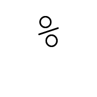
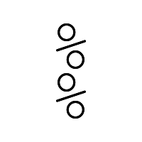
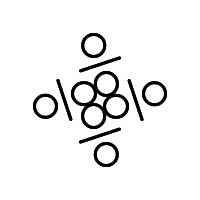

〜2014年6月上旬〜
いきなりGNU parallelの罠にはまってしまったが、
シェルを介すからこそ簡単にできることもある。
たとえば
Ten Countは
parallel seq {} $\[{}+9]
でいいわけだ。xargsだとこんな感じにならざるを得ない。
xargs -I@ zsh -c 'seq @ $[@+9]'
900通ほど。なにしろ31日にspam bombがあったため。
横よりも縦のほうが長い画像を探すという話。
% for i in *; do identify $i | awk '{split($3,a,"x"); if (a[2]>a[1]) print $1;}'; done
identifyは-formatで好きな情報を選んで表示できるので、awkでsplitするよりは簡単になる。
% identify bakeneko-eban-twitter-sleepy.png bakeneko-eban-twitter-sleepy.png PNG 300x300 300x300+0+0 8-bit DirectClass 16.4KB 0.000u 0:00.000 % identify -format '%f %w %h' bakeneko-eban-twitter-sleepy.png bakeneko-eban-twitter-sleepy.png 300 300
% for i in *; do identify -format '%f %w %h' $i | awk '$2<$3{print $1}'; done
さらにワイルドカード処理をconvertに任せてしまえばforは要らない。この場合は改行が必要。
% identify -format '%f %w %h\n' '*' | awk '$2<$3{print $1}'
アニメーションGIFの場合を考えると最初の1枚だけにしないとうっとうしいので[0]をつけたほうがいい。
% identify -format '%f %w %h\n' '*[0]' | awk '$2<$3{print $1}'
月曜日の朝に再開。一応spam bombに対しては策を講じた。
30分でまた攻撃も再開。対策もうまくいって全部ブロック。
652通であきらめたようで、その後はぴたっと来なくなった。
Ubuntu 14.04から aptコマンドが追加されたというので 例のあれをやってみた。
% apt moo
(__)
(oo)
/------\/
/ | ||
* /\---/\
~~ ~
..."Have you mooed today?"...
% apt moo moo
(__)
_______~(..)
,----\(oo)
/|____|,'
* /"\ /\
~ ~ ~
..."Have you mooed today?"...
% apt moo moo moo
\_/
m00h (__) -(_)-
\ ~Oo~___ / \
(..) |\
___________|_|_|_____________
..."Have you mooed today?"...
% apt moo moo moo moo
(__)
(oo)
/------\/
/ | ||
* /\---/\
~~ ~
..."Have you mooed today?"...
% apt moo moo moo moo
(__)
_______~(..)
,----\(oo)
/|____|,'
* /"\ /\
~ ~ ~
..."Have you mooed today?"...
% apt moo moo moo moo
\_/
m00h (__) -(_)-
\ ~Oo~___ / \
(..) |\
___________|_|_|_____________
..."Have you mooed today?"...
mooが3つになるとランダムに表示されるようだ。
4月1日はfaketimeの出番だ。
% faketime 4/1 apt moo
_ _
(_\___( \,
)___ _ Have you smashed some milk today?
/( (_)-(_) /
,---------' \_
//( ',__,' \ (' ')
// ) '----'
'' ; \ .--. ,/
| )',_,'----( ;
||| ''' '||
% faketime 4/1 apt moo moo
_ _
(_\___( \,
)___ _ Have you smashed some milk today?
/( (_)-(_) /
,---------' \_
//( ',__,' \ (' ')
// ) '----'
'' ; \ .--. ,/
| )',_,'----( ;
||| ''' '||
こっちは1種類だけだ。
minttyをタブ化する目的で入れた。
Free版は3つまでタブ化可能。
それを越えると3個ごとのグループが作られる。
minttyはなんだかんだで5個ぐらい開いてるかな。
tmuxとかscreenを使えばいいんだが、
ネストするのいやで大元はタブにするのが好み。
例の東京アメッシュで家を中心に20km圏内で雨が降ってる範囲の割合計算してるんだけど、
なぜか100%にならないことに気づいた。
どう見ても色がついてるので変だなと思ったら、blackなんてものが。
そんな色どこにも見当たらない。
拡大してみたら、そうか影か。
そんなエフェクトが。
これを足したらちゃんと100%になった。
WindowTabsとDexpotの相性が悪い。
せっかくタブ化してもDexpotで仮想デスクトップを切り替えるとタブ化が解除されてしまう。
とはいえ全部重なっているのでCTRL+TABで切り替えるとうまい具合にminttyだけで巡回する。
つまりまるでタブを切り替えるのと同じ状態になる。タブはないけど。
これは適当に重ねとけばWindowTabsがなくてもいいと言える。
CTRL+TABはブラウザでもお馴染の機能で覚えやすい。
すでにあるアニメーションGIFの最初の画像を削除して新たに画像を加えるにはどうしたらいいか。
まずはわかりやすいように0,1,2と埋め込んだアニメーションGIFを作る。
% convert -loop 0 -delay 100 -size 250x250 -pointsize 200 -gravity center \ \( xc:white -draw 'text 0,0 "0"' \) \ \( xc:white -draw 'text 0,0 "1"' \) \ \( xc:white -draw 'text 0,0 "2"' \) \ 012.gif
続いてこの画像をいじる。最初の画像は-delete 0で消せる。その後で3を追加する。
% convert -loop 0 -delay 100 012.gif -size 250x250 -pointsize 200 -gravity center \ -delete 0 \ \( xc:white -draw 'text 0,0 "3"' \) \ 123.gif
結構あっさりできた。元画像を残しておかなくてもアニメーションGIF画像だけあればできるわけだ。
消したり最後に追加したりするほかに、swapで入れ替えたり、insertで挿入することも可能。
cloneはいままでもちょくちょく使っているし、これだけできれば任意の操作が可能だな。
以前の方法だと無駄に長くなるのでちょっといじってみた。
重ねるときは-compose multiplyでよさげだ。
% convert -size 200x200 xc:white -font Courier-New-Regular -pointsize 100 -gravity center \ -draw 'text 0,-30 "%"' +repage 0000.png % convert -gravity center 0000.png \( +clone -rotate 180 \) -compose multiply -composite 1800.png % convert -gravity center 1800.png \( +clone -rotate 90 \) -compose multiply -composite 0900.png % convert -gravity center 0900.png \( +clone -rotate 45 \) -compose multiply -composite 0450.png % convert -gravity center 0450.png \( +clone -rotate 22.5 \) -compose multiply -composite 0225.png
  
背景の白を透明にして重ねると境界のあたりがかなり残念な状態に。
モノクロに見えるけど実際はアンチエイリアスがかかっているので境界はグレーになっている。
できあがりはこんな感じ。
これはこれで味があっていいのかもしれないが。